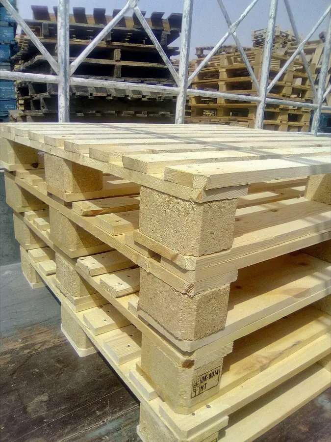

Palette en bois en Tunisie
Atelier tunisien du bois, Palette Tunisie produit des palettes neuves destinées au stockage, à la manutention interne et à l'expédition. Le bois est trié, assemblé avec soin, puis inspecté avant la livraison pour offrir une qualité constante et une bonne résistance à l'usage.
Des palettes robustes, fabriquées localement
Pensées pour l'usage quotidien, nos palettes neuves encaissent le gerbage, le transport interne, le chargement et l'expédition. Le bois passe par une étape de tri et de contrôle qui écarte les pièces hors tolérance. Vous obtenez des palettes nettes, régulières et immédiatement exploitables.

Formats standards et sur-mesure
Côté formats, nous tenons les standards répandus dans l'industrie et la logistique pour vos besoins courants de stockage et de manutention. Pour un cas particulier, nous produisons des palettes sur-mesure selon vos cotes, vos charges et le type de produit à porter. La livraison couvre tout le territoire tunisien au départ de notre atelier de Mornag (Ben Arous), et nous répondons à votre demande de devis sous 2 heures ouvrables.
Questions fréquentes
Quels formats de palettes proposez-vous ?
Palette Tunisie fournit les formats standards les plus demandés en logistique et en stockage, et réalise aussi des palettes sur-mesure d'après vos cotes et vos charges. Décrivez-nous votre usage pour recevoir un devis adapté.
Livrez-vous partout en Tunisie ?
Oui. Nos livraisons couvrent tout le territoire tunisien au départ de notre atelier de Mornag (Ben Arous). Délais et conditions varient selon la quantité et le lieu de destination ; indiquez-les dans votre demande de devis.
Proposez-vous des palettes neuves et réemployées ?
Oui. À côté de nos palettes neuves en bois trié, nous tenons aussi des palettes réemployées, contrôlées et reclassées. Nous vous conseillons l'option la mieux ajustée à votre usage et à votre budget.